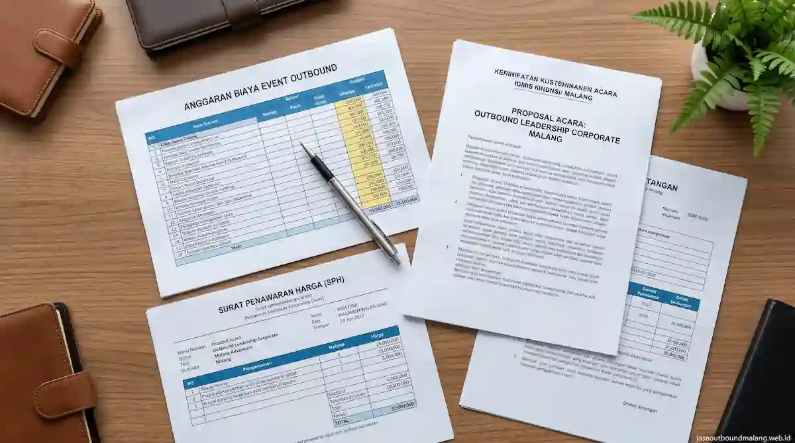

Mengapa Administrasi Outbound Penting bagi Instansi?
Bagi perusahaan swasta non-formal, penyelenggaraan acara outbound sering kali cukup diselesaikan dengan kesepakatan sederhana. Namun bagi instansi pemerintah, sekolah, perguruan tinggi, maupun BUMN/BUMD, setiap kegiatan yang menggunakan alokasi anggaran dinas wajib dipertanggungjawabkan secara transparan, akuntabel, dan dapat diaudit oleh pihak internal maupun eksternal.
Masalah yang paling sering terjadi di lapangan adalah ketika urusan administrasi baru dibahas setelah acara selesai. Masalah seperti format kuitansi tidak sesuai aturan keuangan dinas, rincian biaya yang terlalu ringkas tanpa pemecahan komponen, hingga ketiadaan faktur pajak kerap mengakibatkan proses pencairan anggaran terhambat. Untuk menghindari kendala ini, pemilihan vendor juga harus memperhatikan aspek legalitas hukum yang telah diulas secara khusus pada panduan tips memilih provider jasa outbound Malang terpercaya.
Dokumen Apa Saja yang Umumnya Dibutuhkan?
Daftar dokumen berikut merupakan kelengkapan standar yang biasanya diminta oleh bagian bendahara atau pejabat pembuat komitmen (PPK) pada kegiatan instansi di wilayah Malang Raya:
| Jenis Dokumen | Fungsi Dokumen | Pihak Penanggung Jawab |
|---|---|---|
| Surat Penawaran Harga (SPH) | Memuat rincian paket, jenis layanan, volume peserta, harga unit, dan syarat kerja sama resmi. | Vendor Outbound |
| Rincian Program & Anggaran (RAB) | Menjelaskan pemecahan komponen biaya secara terperinci agar mudah diverifikasi. | Vendor (disesuaikan dengan panitia) |
| Rundown & Modul Kegiatan | Acuan jadwal alur acara, jam pelaksanaan, serta materi simulasi team building. | Vendor bersama Panitia |
| Kuitansi / Bukti Pembayaran | Bukti pendaftaran dan pelunasan transaksi sah berstempel resmi untuk pertanggungjawaban kas. | Vendor Outbound |
| Faktur Pajak (Bila Berlaku) | Kelengkapan administrasi perpajakan (PPN/PPh) sesuai regulasi pengadaan barang dan jasa. | Vendor (sesuai status PKP/Badan Usaha) |
| Laporan & Dokumentasi | Bukti fisik pelaksanaan kegiatan berupa foto, video, daftar hadir, dan lembar evaluasi. | Vendor & Panitia Instansi |

Apa yang Sebaiknya Tercantum dalam Penawaran dan Rincian Anggaran?
Surat Penawaran Harga (SPH) yang profesional tidak hanya memuat angka total, melainkan perincian komponen secara transparan. Hal ini penting untuk membantu panitia dalam menyesuaikan alokasi anggaran belanja dinas. Komponen wajib yang harus diperiksa meliputi:
- Cakupan Layanan Utama: Jumlah fasilitator tersertifikasi, instruktur, peralatan safety/games, sound system, serta asuransi peserta.
- Volume dan Durasi: Jumlah kuota peserta pasti dan lama pelaksanaan (Half-day, Full-day, atau Inap 2 Hari 1 Malam).
- Fasilitas Akomodasi & Konsumsi: Keterangan katering, makan siang prasmanan, coffee break, tiket masuk lokasi wisata, atau sewa penginapan/resort.
- Ketentuan Pembayaran & Pembatalan: Aturan termin uang muka (DP), batas waktu pelunasan, serta kebijakan pengembalian dana atau perubahan jadwal akibat cuaca ekstrem (force majeure).
- Status Pajak: Kejelasan apakah nominal harga yang tercantum sudah termasuk pajak (tax inclusive) atau belum (tax exclusive).
Bagi instansi yang sedang menyusun estimasi alokasi dana secara efisien, penyesuaian rincian komponen harga juga dapat merujuk pada artikel panduan estimasi biaya paket outbound Malang Batu untuk perusahaan.
Bagaimana Alur Pembayaran dan Penerbitan Bukti Transaksi?
Meskipun mekanisme keuangan pada setiap instansi memiliki kekhasan tersendiri, alur baku tata kelola transaksi pengadaan jasa outbound umumnya berlangsung dalam tahapan berikut:
- Pengajuan Kebutuhan: Panitia menyampaikan rincian jumlah peserta, target lokasi di Malang Batu, dan kisaran anggaran kepada penyedia jasa.
- Penerbitan SPH & RAB: Vendor seperti jasaoutboundmalang.web.id menerbitkan SPH resmi beserta rincian breakdown paket kegiatan.
- Persetujuan & Verifikasi Internal: Berkas diperiksa oleh Pejabat Pembuat Komitmen (PPK) atau bagian keuangan instansi.
- Penandatanganan Perjanjian Kerja Sama: Konfirmasi kerja sama tertulis disertai kesepakatan termin pembayaran.
- Penerbitan Kuitansi & Faktur Pajak: Vendor menerbitkan kuitansi berstempel dan faktur pajak sesuai ketetapan termin pembayaran.
- Serah Terima Laporan Pertanggungjawaban: Setelah kegiatan berakhir, vendor menyerahkan album dokumentasi, berkas absensi, serta laporan singkat pelaksanaan acara.
Beberapa instansi memiliki mekanisme pencairan dana yang mensyaratkan pelunasan penuh dilakukan setelah acara selesai (sistem ls atau reimbursement). Komunikasikan ketentuan ini sejak awal agar vendor dapat menyesuaikan skema administrasinya.
Apa yang Perlu Disiapkan Setelah Kegiatan Selesai?
Selesainya kegiatan di lapangan bukanlah akhir dari tugas panitia. Untuk memastikan pertanggungjawaban anggaran berjalan lancar, berikut berkas fisik yang wajib dikumpulkan dan diarsipkan:
- Daftar Hadir Peserta (Absensi): Lembar presensi yang ditandatangani oleh seluruh peserta pada hari H kegiatan.
- Dokumentasi Foto & Video: Bukti visual beresolusi tinggi yang menampilkan dinamika kelompok, spanduk/banner kegiatan, serta suasana lokasi.
- Rundown Terlaksana: Jadwal aktual acara yang telah ditandatangani oleh koordinator lapangan.
- Laporan Hasil Evaluasi: Laporan singkat dari vendor yang merekam tingkat partisipasi dan capaian simulasi team building. Mekanisme pengukuran dampak kegiatan ini dapat dipelajari lebih lanjut melalui panduan manfaat team building outbound bagi efisiensi kerja karyawan.
Kesalahan Umum dalam Administrasi Outbound Instansi
Agar proses pertanggungjawaban terhindar dari kendala pemeriksaan, panitia dihimbau untuk mengantisipasi beberapa kesalahan fatal berikut:
1. Membicarakan Dokumen Secara Mendadak
Membahas format kuitansi atau faktur pajak setelah acara selesai sering kali menyebabkan ketidaksesuaian tanggal transaksi dengan kalender anggaran dinas.
2. Menerima Penawaran Tanpa Rincian Komponen
Penawaran yang hanya mencantumkan total harga borongan (lump sum) tanpa penjelasan detail komponen riskan ditolak oleh auditor keuangan.
3. Mengabaikan Status Perpajakan Vendor
Lupa mengonfirmasi apakah vendor merupakan Pengusaha Kena Pajak (PKP) dapat menimbulkan selisih perhitungan kewajiban PPN/PPh.
4. Kelalaian Mengarsipkan Presensi Peserta
Ketiadaan daftar hadir fisik membuat panitia kesulitan membuktikan keabsahan jumlah peserta yang dialokasikan dalam anggaran.
Tim jasaoutboundmalang.web.id siap mendampingi panitia instansi dari tahap perencanaan, penyusunan SPH, penyediaan faktur pajak, hingga penyerahan laporan pertanggungjawaban secara lengkap dan sistematis.